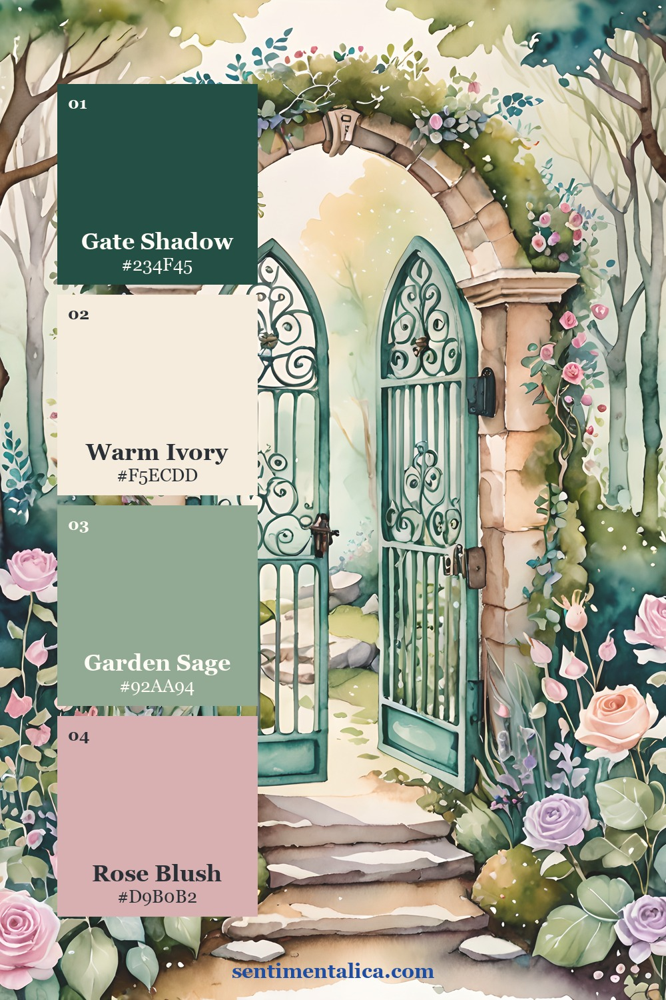
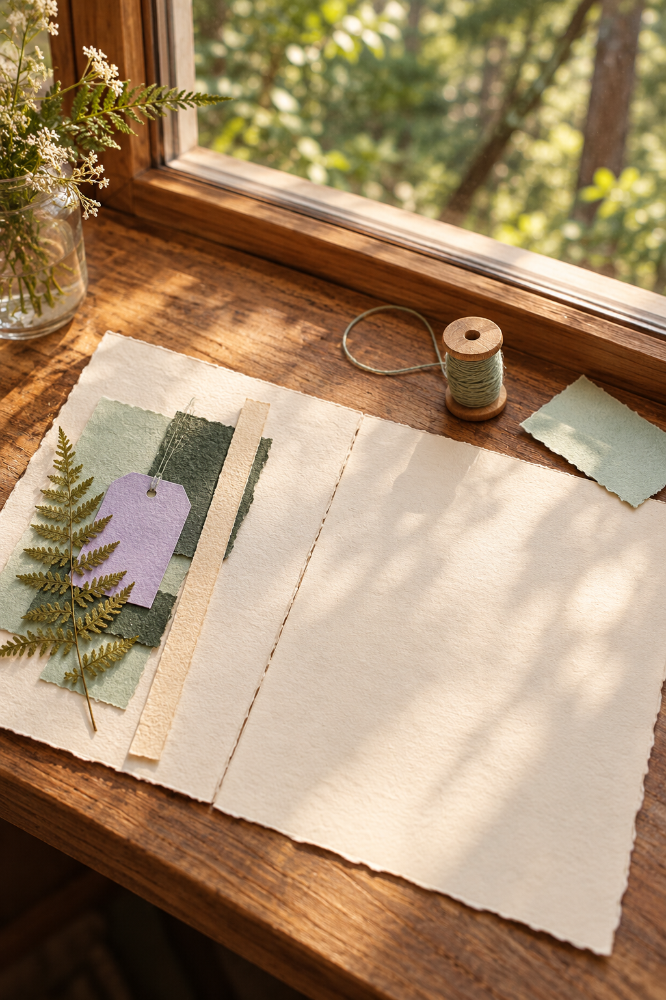
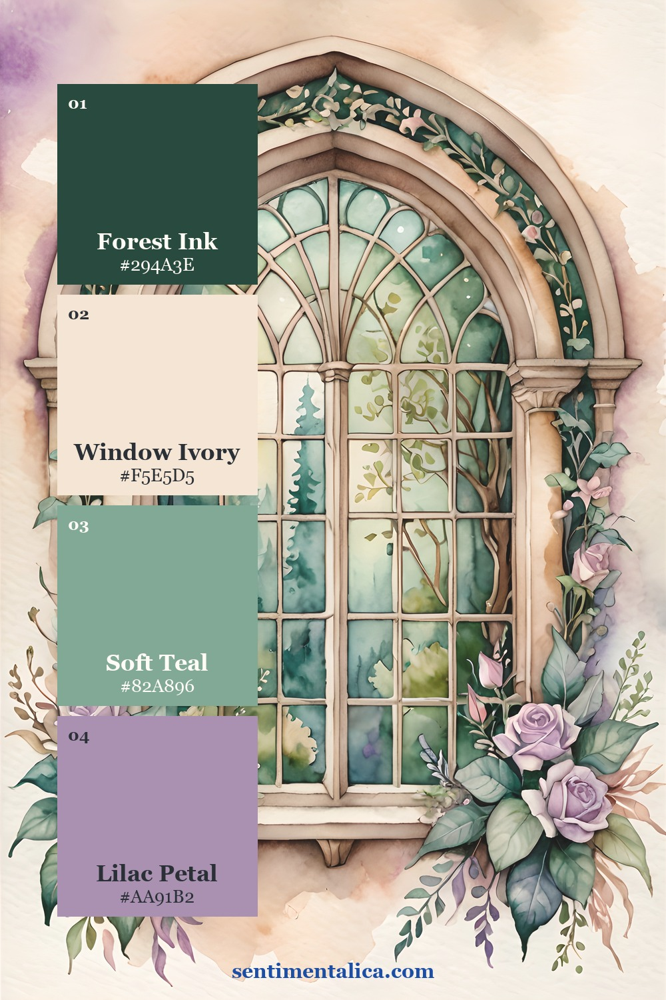
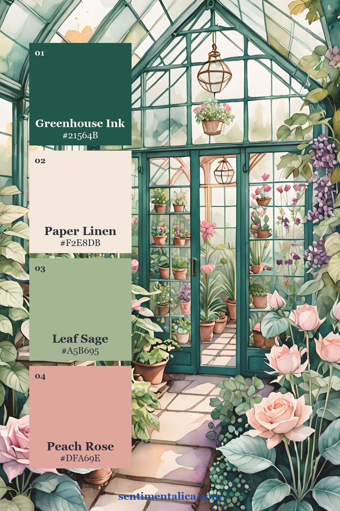
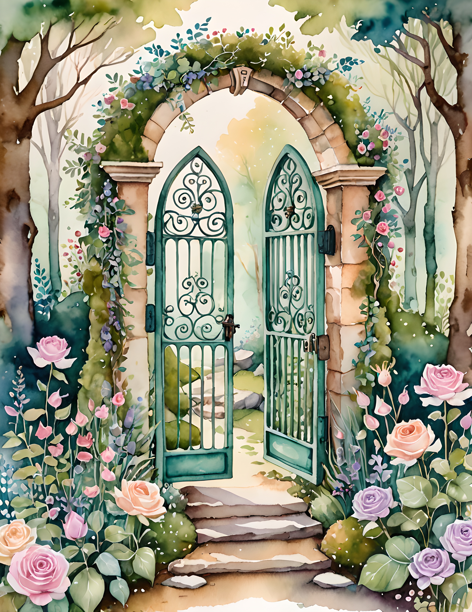
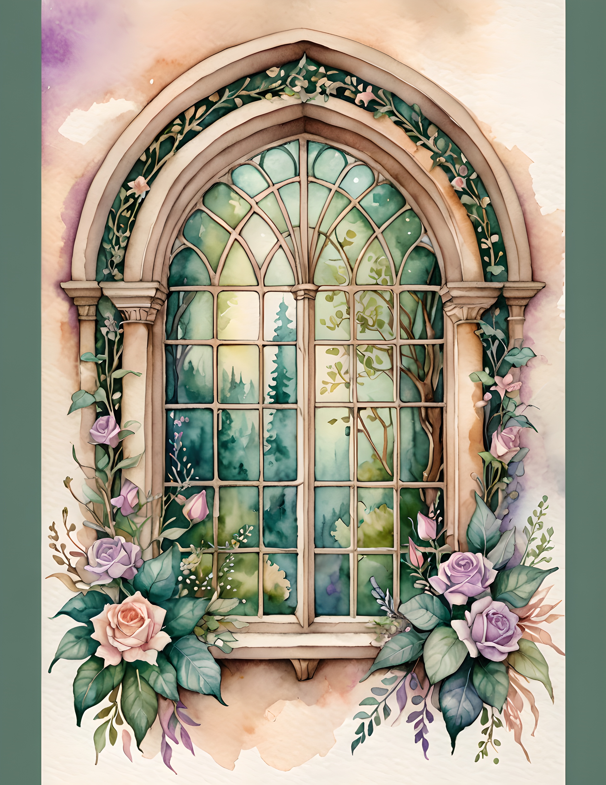
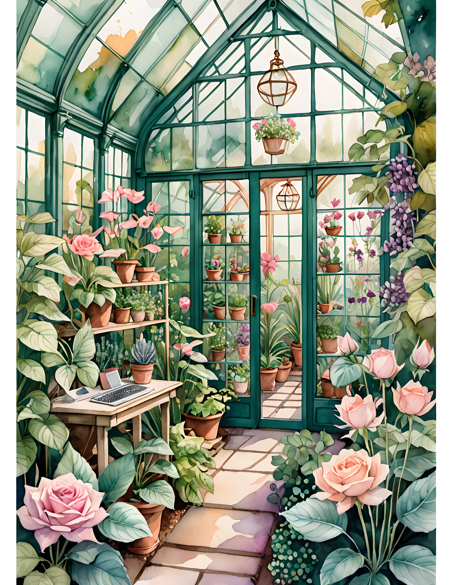

An airy fairy garden journal page needs a small place for wonder and enough plain paper to let it be noticed. Rather than filling a spread with every magical detail, choose one discovery: something you saw on a walk or something you invented for a tiny woodland world. Fairy Wings’ watercolor imagery can provide a gentle setting. Your own note tells the reader what happened there.
Decide Whether the Discovery Is Real or Invented
Start with a short line describing the discovery. For a real memory, it might be a butterfly resting near a flower or a mushroom beneath a tree. Add the date and place if you want to return to the observation later. You can use a photograph, a quick sketch, or just the words.
For an invented scene, write ‘A note from my imagined garden’ somewhere small. Perhaps a cottage door opened after rain or a resident left a message by a path. Keeping that distinction visible lets the page be whimsical without making an invented event sound like something you actually witnessed.
Wonder is easier to notice when it has a little quiet around it.

Give the Scene a Ground and Some Air
Use a darker or more substantial image detail low on the page as the ground. Above it, reserve a pale writing field. This simple arrangement gives the woodland setting somewhere to sit and the story somewhere to unfold. Try the pieces loose before deciding how much artwork you need.
The atmospheric and process images here suggest a mood for making; the real collection pages later in the article show the artwork you can choose. A generated scene is not a photograph of a finished project made from the collection. Use it for atmosphere, then plan your actual page with the printable image and papers in front of you.


Let One Color Carry the Surprise
Use the palette cards to see how a light paper tone, a grounded dark shade, a gentle middle color, and a small accent can work together. Select the card that suits the particular page you choose. Color names and swatches are a guide to the image, not a rule that every scrap must match precisely.
Put the strongest accent close to the discovery you want the reader to notice. It might repeat in a small paper label or a pencil detail near the note. Keep the rest of the spread quieter. An airy page can include a dark anchor; it needs a clear balance between that weight and the lighter space around it.

Write a Tiny Scene with a Concrete Detail
For a real observation, describe one detail you noticed before adding how it felt. ‘The wings stayed folded against the stem’ gives the reader something to picture. If you are unsure about an identification, use ordinary descriptive words rather than a confident species name. The page records your attention, not a field-guide entry.
For an imagined discovery, add one detail that belongs to daily life in the little world: a damp doorstep, a missing cup, or a note written hurriedly. Those objects can make the fantasy feel inhabited. Keep the scene short enough that the surrounding blank paper still feels intentional rather than waiting to be filled.
Leave an Exit from the Picture
Place the final sentence on plain paper just beyond the artwork. This gives the eye a route from the scene into your voice. A narrow torn edge can connect them, but avoid surrounding the whole note with competing motifs. Read the words once without looking closely at the image to check that they make sense alone.
If the spread begins to feel crowded, remove the extra decorative piece before trimming away the writing space. The discovery should remain easy to find. The real Fairy Wings pages below offer different places to begin; choose the one that supports your small scene and leave a little room for whatever you might notice next.
Choose a Page for Your Own Layout
Compare the real collection pages below before deciding which image belongs in your project. Look for a focal detail that supports your story, then provide the writing space with your own plain paper. The palette cards show color possibilities, while these pages let you see the artwork itself.



Find more gentle paper projects in the Sentimentalica journal.